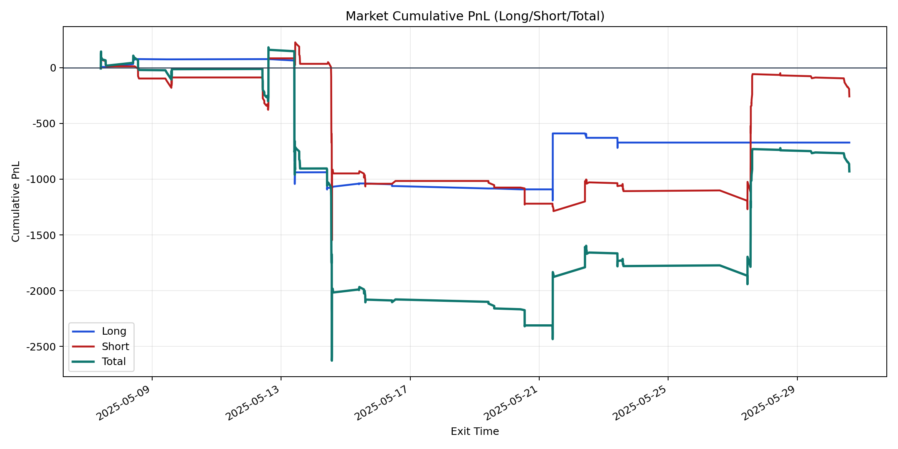
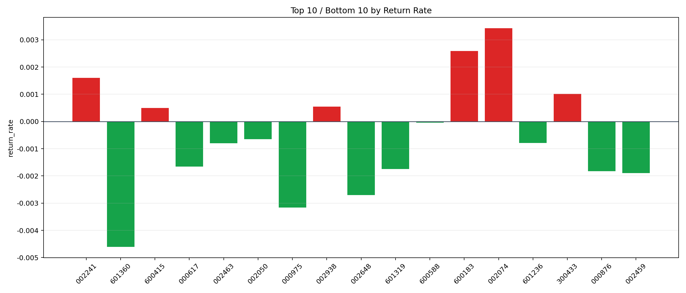

| repo_root | /home/haoranyou/data/output/alpha0.4_1w_5s_3ticks_index_filter/index_weights_300 |
|---|---|
| period_months | 1 |
| period_label | 2025-05-07_to_2025-05-30 |
| start_time | 2025-05-07 09:50:12 |
| end_time | 2025-05-30 14:45:02 |
| n_trades | 351 |
| n_symbols | 17 |
| total_pnl | -930.1971999999877 |
| long_total_pnl | -671.7780499999916 |
| short_total_pnl | -258.4191499999969 |
| total_entry_notional | 3193022.0 |
| long_entry_notional | 875949.0 |
| short_entry_notional | 2317073.0 |
| total_return_rate | -0.000291321888793747 |
| long_return_rate | -0.0007669145692271943 |
| short_return_rate | -0.0001115282729547135 |
| top_symbols_by_return | ["002074", "600183", "002241", "300433", "002938", "600415", "600588", "002050", "601236", "002463"] |
| bottom_symbols_by_return | ["601360", "000975", "002648", "002459", "000876", "601319", "000617", "002463", "601236", "002050"] |

